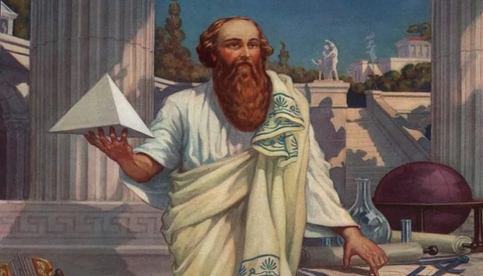

Welcome to the Mathematical World!
Pythagoras
Ancient Greek Philosopher, Mathematician, and Spiritual Leader (c. 570–495 BCE)
Pythagoras (c. 570–495 BCE) is best known for the Pythagorean Theorem, a fundamental principle in mathematics relating the sides of a right triangle. However, he was also a significant philosopher and religious figure whose ideas profoundly influenced both mathematics and spirituality.
Pythagoras founded a religious movement known as the Pythagoreans, who followed strict rules including dietary restrictions and communal living. They believed in the transmigration of souls (reincarnation) and viewed numbers as the ultimate reality underlying all existence.
Philosophy and Beliefs
- Numbers were seen as the essence of all things; everything could be understood through numerical relationships.
- The universe was thought to be structured harmonically, like musical intervals, reflecting mathematical order.
- The soul was immortal and passed through cycles of rebirth until it achieved purification.
Mathematical Contributions
Pythagoras and his followers contributed to mathematics beyond the famous theorem:
- Pythagorean Theorem: For a right-angled triangle, the square of the hypotenuse equals the sum of the squares of the other two sides, expressed as \[a^2 + b^2 = c^2\].
- Developed concepts of numerical ratios and proportions, essential to later geometry and music theory.
- Explored properties of numbers, including classifications such as even and odd, perfect numbers, and triangular numbers.
Legacy and Influence
Pythagoras’ blending of mathematics, philosophy, and mysticism shaped the development of Western thought. His emphasis on numerical harmony influenced Plato, Aristotle, and later Neoplatonists. The Pythagorean approach set the stage for the rigorous study of mathematics as both a scientific and philosophical discipline.
His work also inspired developments in musical theory, astronomy, and cosmology, emphasizing the interconnectedness of the universe through mathematical principles.